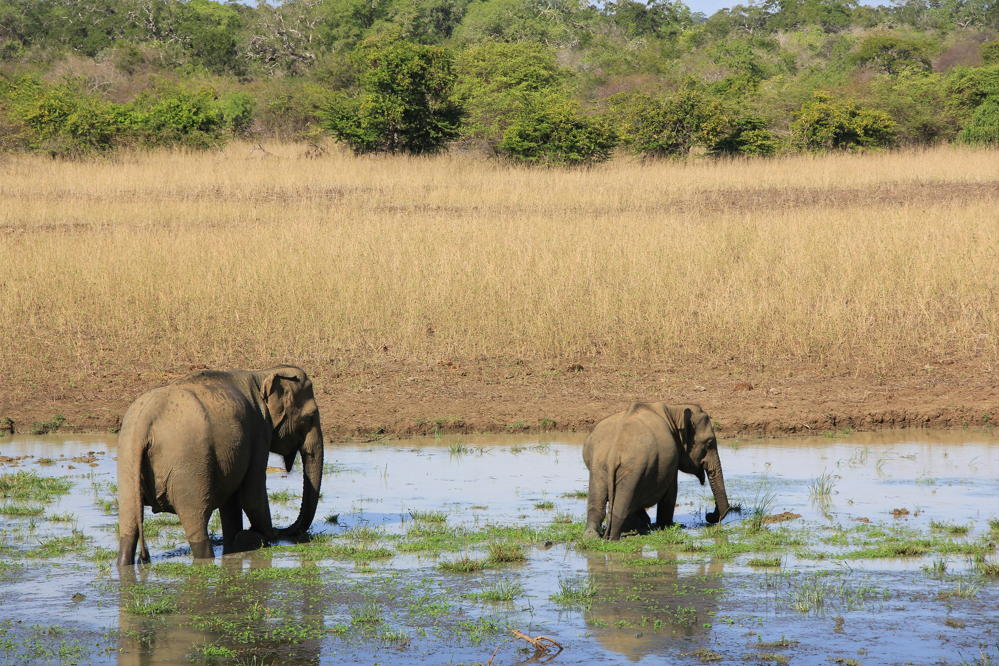
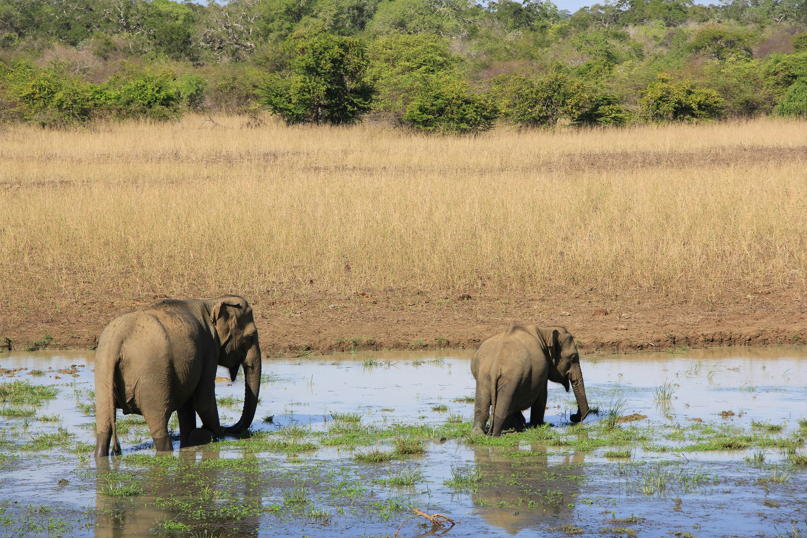

_Guides_
Brief details of the places I visited in Sri Lanka are given below.
-
Adam's Peak (Sri Pada):-
Adam’s Peak, or Sri Pada, is a revered pilgrimage site and prominent mountain located in central Sri Lanka, standing at 2,243 meters (7,359 feet). Known for the sacred footprint at its summit, believed to be left by Buddha, Adam, Shiva, or Saint Thomas depending on various beliefs, the mountain attracts both religious devotees and hikers. The ascent is especially popular for witnessing stunning sunrise views, where the shadow of the peak creates a triangular silhouette over the surrounding hills.
-
Bambarakanda Waterfall:-
Standing at 263 meters (863 feet), Bambarakanda Waterfall is Sri Lanka's tallest waterfall, located in the Kalupahana area in the Badulla District. Surrounded by lush greenery and pine forests, it flows down a steep rock face and is fed by streams originating in the Horton Plains. Accessible by a scenic trail, the falls are an ideal destination for hikers and nature lovers looking to explore the highlands’ beauty.
-
Ambuluwawa Tower:-
Ambuluwawa Tower is a unique multi-religious monument situated on the Ambuluwawa Mountain in Gampola, reaching an altitude of over 1,000 meters. The twisting tower, inspired by a pagoda, offers panoramic views of the surrounding landscape, including rivers, mountains, and valleys. The complex promotes harmony among various religions with shrines representing Buddhism, Hinduism, Islam, and Christianity, making it both a scenic and spiritual experience.
-
Sinharaja Forest Reserve:-
Sinharaja Forest Reserve is Sri Lanka’s last major primary rainforest, recognized as a UNESCO Biosphere Reserve and World Heritage Site. Located in the southwest of the country, this dense rainforest is rich in biodiversity and houses numerous endemic species of flora and fauna, including the purple-faced langur, Sri Lankan blue magpie, and various plant species. Ideal for nature enthusiasts, Sinharaja offers trekking paths that provide an immersive experience in a pristine natural environment.
-
Sigiriya (Lion Rock):-
Sigiriya, also known as Lion Rock is a UNESCO World Heritage Site and an iconic rock fortress located in the Matale District. Rising 200 meters above the surrounding plains, it was constructed by King Kashyapa in the 5th century AD as both a palace and a fortress. Its frescoes, mirror wall, and massive lion-shaped gateway are famous attractions, offering breathtaking views and insight into Sri Lanka's ancient urban planning, engineering, and artistry.
-
Yala National Park:-
Yala National Park, located in the southeastern region of Sri Lanka, is the country's second-largest and most-visited national park, covering nearly 979 square kilometers. Known for its incredible biodiversity, Yala is home to a variety of ecosystems, including dry forests, grasslands, and lagoons. The park is famous for its high density of Sri Lankan leopards, offering one of the best chances in the world to spot these elusive animals in the wild. In addition to leopards, Yala hosts elephants, sloth bears, crocodiles, and over 200 species of birds, making it a paradise for wildlife enthusiasts and bird watchers. With designated safari zones and expert guides, visitors can explore this unique wilderness while respecting conservation efforts that protect its delicate environment.
_Gallery_
Photos of places related to the above details are displayed below respectively.
 5
5 6
6